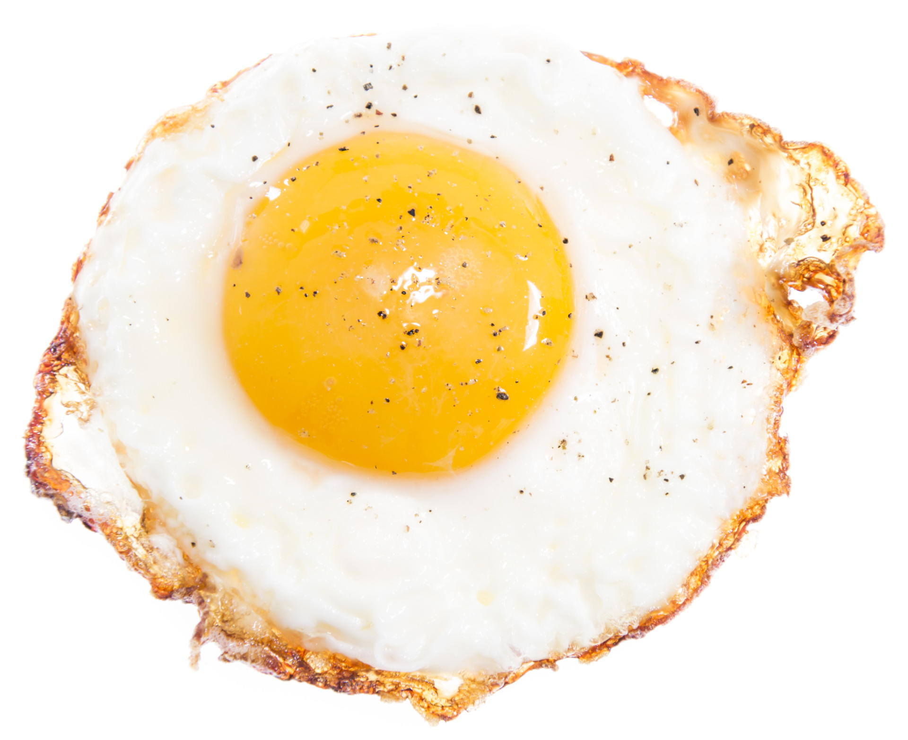

Fried Eggs
Ingredients
- 1–3 eggs
- 2 teaspoons butter or oil
Preparation
-
Carefully break an egg into a small bowl. (Repeat later if cooking
multiple eggs.)
-
Heat oil in a large (and preferably non-stick) sauté pan over medium
heat. Once the pan is fully heated, carefully pour in the egg, and let
it cook until the whites are completely set but the yolks are still
soft. Remove immediately and serve for sunny-side-up eggs
-
Or, flip the egg over and cook for an additional 10-30 seconds for
over-easy eggs, or 30-60 seconds for over-medium eggs, or 1-2 minutes
for over-hard egg
-
Remove and serve immediately, seasoned with salt and pepper if you’d
like.